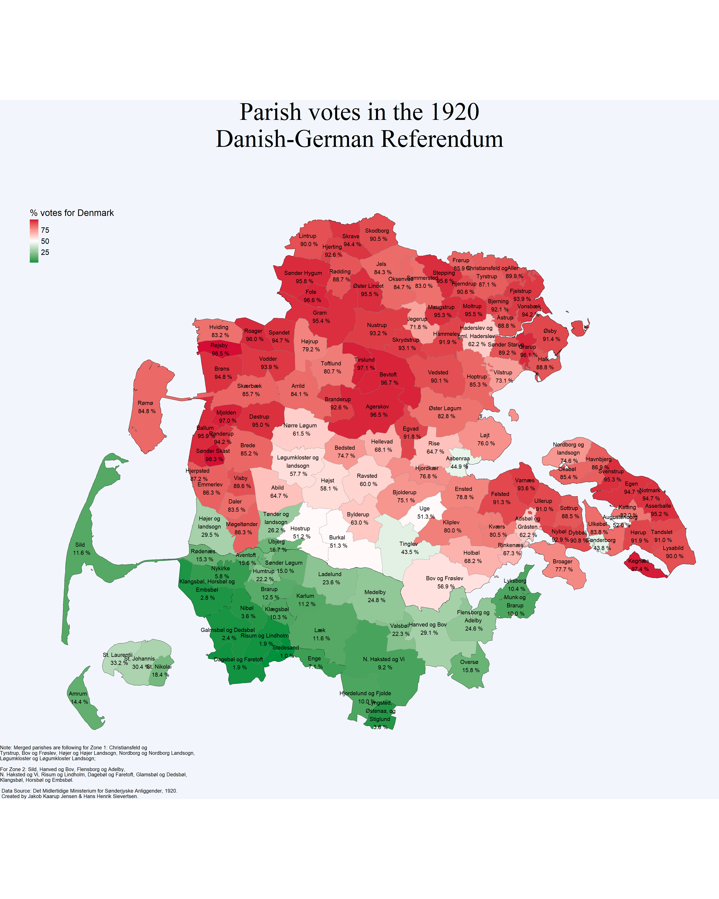

Show the code
library(sf)
library(viridis)
library(tidyverse)We digitized the tables from the book “Afstemningen i Sønderjylland (I og II ZONE)” (Det Midlertidige Ministerium for Sønderjyske Anliggender, 1920) on the 1920 Danish-German referendum and made it available in the github repository here github.com/hhsievertsen/Data-on-the-1920-Danish-German-referendum. Everyone is welcome to use the data, but please cite the original source (the aforementioned book). This note contains some illustrations of the data.
Please let us know if you find any mistakes (to: mail@hhsievertsen.net).
Jakob and Hans
This note presents the data on vote shares in parishes from the 1920 Danish-German referendum (Wikipedia). The data is digitized from the book “Afstemningen i Sønderjylland (I og II ZONE)” using ChatGPT with manual corrections (please let us know if you find any mistakes). The data is available as csv files in the github repository: github.com/hhsievertsen/Data-on-the-1920-Danish-German-referendum.
This note is divided into two sections. In the first section we present the results focusing on Zone 1, where we look into the voting results with and without “non-resident votes”. This distinction is explained below. In the second section we look into the vote shares in Zone 1 and 2. We map the share of votes for Denmark across the parishes in both zones, replicating the map from the aforementioned book.
The zones refer to geographical areas which were drawn before the referendum as an outcome of the Treaty of Versailles from 1919. Subsequently, referendums were held in zones to determine national affiliation to either Denmark or Germany.
Zone 1 consists of Northern Schleswig, which today is part of Southern Jutland in Denmark, where the votes resulted in a Danish majority in 1920. Votes for Denmark accounted for approximately 80% of the votes. Zone 2 consists of Middle Schleswig, which today makes up the northern part of the German state of Schleswig-Holstein. In this Zone, the 1920 votes resulted in a clear German majority, with only 12% votes for Denmark.
The data is split into two datasets.
The dataset 2025-01-10-votedata_total.csv contains the following five variables
The dataset 2025-01-10-votedata_total_merged_parishes.csv is similar to 2025-01-10-votedata_total.xlsx, but we have manually merged parishes for the map below.
Load libraries
library(sf)
library(viridis)
library(tidyverse)In this section, we examine the vote shares with and without non-residents in the 1920 referendum We only look at the votes in Zone 1, as the distinction of vote shares by residents status has not been made for Zone 2 due to a lack of information from the electoral office of Aabenraa (det Midlertidige Ministerium for Sønderjyske Anliggender, 1920).
Non-residents refers to individuals who no longer had residency in the region but nonetheless were granted voting rights based on earlier and temporary affiliation with the area. These individuals referred to those who
df<-read.table("data/2025-01-10-votedata_with_nonresident_category.csv",
sep=";",header=TRUE)In this section we show the geographic distribution of votes “for Denmark” across parishes in in Zone 1 and 2. This is a replication of the voting map from the book “Afstemningen i Sønderjylland (I og II ZONE)” (det Midlertidige Ministerium for Sønderjyske Anliggender, 1920). For this visualization, we use parish shapefiles from both Denmark and Germany to map the election results in each parish.
We are faced with the challenge that some parishes have changed since 1920, both in Zone 1 and Zone 2. Among the Danish parishes in Zone 1, the most significant change is the removal of distinctions between towns and their surrounding rural parishes. For instance, in the more recent parish divisions, there is no distinction between Tønder and Tønder rural parish. Moreover, certain parishes that were once separate, such as Bov and Frøslev, have since been merged. In these cases, we have chosen to merge parishes by combining their results and then calculating the percentage of Danish votes. There are also a few cases where the parishes have since been split; however, this is not a significant challenge, as in these cases, we simply merge areas of these parishes in the shapefiles.
Together, this approach maintains the alignment of the parishes’ geographical areas with their historical boundaries, thus creating consistency between our mapping and the map that we will replot, with the difference that we have merged a few parishes.
The same issue is present in the German parishes in Zone 2, where the main challenge is that some former parishes have since been merged. In these cases, as before, we calculate the combined share of Danish votes for the merged parishes. However, there is also one case where parishes have been split since 1920. This concerns the parishes on the island of Föhr, which originally consisted of three parishes but have now been divided into 11. In this case, we have merged the parishes in the German shapefiles to form the three original parishes.
# Load shapefile for Danish parishes
dk_sogn <- read_sf("shapefiles/sogn-granser-utm-zone-32n.shp")
Adsboel_Graasten <- dk_sogn %>%
filter(navn %in% c("Adsbøl", "Gråsten")) %>%
summarise(geometry = st_union(geometry), do_union = FALSE) %>%
mutate(navn = "Adsbøl og\n Gråsten")
jaegerup_vojens <- dk_sogn %>%
filter(navn %in% c("Jegerup", "Vojens")) %>%
summarise(geometry = st_union(geometry), do_union = FALSE) %>%
mutate(navn = "Jegerup")
oster_logum_genner <- dk_sogn %>%
filter(navn %in% c("Øster Løgum", "Genner")) %>%
summarise(geometry = st_union(geometry), do_union = FALSE) %>%
mutate(navn = "Øster Løgum")
egernsund_Broager <- dk_sogn %>%
filter(navn %in% c("Egernsund", "Broager")) %>%
summarise(geometry = st_union(geometry), do_union = FALSE) %>%
mutate(navn = "Broager")
sankt_marie_christians <- dk_sogn %>%
filter((navn == "Sankt Marie") | (navn == "Christians" & sognekode == 8989)) %>%
summarise(geometry = st_union(geometry), do_union = FALSE) %>%
mutate(navn = "Sønderborg")
Haderslev <- dk_sogn %>%
filter(navn %in% c("Gammel Haderslev", "Vor Frue")) %>%
summarise(geometry = st_union(geometry), do_union = FALSE) %>%
mutate(navn = "Haderslev og\n gml. Haderslev")
dk_sogn <- dk_sogn %>%
filter(!(navn %in% c("Adsbøl", "Gråsten", "Jegerup", "Vojens","Øster Løgum",
"Genner", "Egernsund", "Broager","Sankt Marie",
"Gammel Haderslev", "Vor Frue")|(navn == "Christians" & sognekode != 8989))) %>% # Remove old parishes
bind_rows(Adsboel_Graasten, jaegerup_vojens, oster_logum_genner,
egernsund_Broager, sankt_marie_christians, Haderslev )%>% # Add merged parishes
mutate(navn = ifelse(navn == "Bov", "Bov og Frøslev", navn),
navn = ifelse(navn == "Højer", "Højer og\n landsogn", navn),
navn = ifelse(navn == "Tyrstrup", "Christiansfeld og\n Tyrstrup", navn),
navn = ifelse(navn == "Tønder", "Tønder og\n landsogn", navn),
navn = ifelse(navn == "Nordborg", "Nordborg og\n landsogn", navn),
navn = ifelse(navn == "Løgumkloster", "Løgumkloster og\n landsogn", navn)
) %>%
filter(!(navn == "Rødding" & sognekode != 8949)) %>%
filter(!(navn == "Vedsted" & sognekode != 8980)) %>%
filter(!(navn == "Christians" & sognekode != 8949)) %>%
filter(!(navn == "Hellevad" & sognekode != 9017)) %>%
filter(!(navn == "Visby" & sognekode != 9042)) %>%
filter(!(navn == "Svenstrup" & sognekode != 9000)) %>%
filter(!(navn == "Hammelev" & sognekode != 8973)) %>%
filter(!(navn == "Døstrup" & sognekode != 9048)) %>%
filter(!(navn == "Hørup" & sognekode != 8996)) %>%
filter(!(navn == "Egvad" & sognekode != 9018)) %>%
filter(!(navn == "Hostrup" & sognekode != 9059)) %>%
filter(!(navn == "Hjerting" & sognekode != 8948) ) %>%
filter(!(navn == "Åstrup" & sognekode != 8963)) %>%
filter(!(navn == "Rise" & sognekode != 9014)) %>%
filter(!(navn == "Frørup" & sognekode != 8984))# Load shapefile for German parishes
de_geminde <- read_sf("shapefiles/georef-germany-gemeinde-millesime.shp")
# Specifying the relevant gemindes (sogne/parishes)
sogne <- c("['Gemeinde Rodenäs']","['Gemeinde Friedrich-Wilhelm-Lübke-Koog']",
"['Gemeinde Klanxbüll']", "['Gemeinde Emmelsbüll-Horsbüll']",
"['Gemeinde Aventoft']", "['Gemeinde Neukirchen']",
"['Gemeinde Galmsbüll']", "['Gemeinde Dagebüll']",
"['Gemeinde Stedesand']", "['Gemeinde Enge-Sande']",
"['Gemeinde Goldelund']", "['Gemeinde Joldelund']",
"['Gemeinde Löwenstedt']", "['Gemeinde Lindewitt']",
"['Gemeinde Meyn']", "['Gemeinde Handewitt']",
"['Gemeinde Harrislee']", "['Stadt Flensburg']",
"['Stadt Glücksburg (Ostsee)']", "['Gemeinde Oeversee']",
"['Gemeinde Großenwiehe']", "['Gemeinde Ellhöft']",
"['Gemeinde Westre']", "['Gemeinde Ladelund']",
"['Gemeinde Bramstedtlund']", "['Gemeinde Weesby']",
"['Gemeinde Böxlund']", "['Gemeinde Jardelund']",
"['Gemeinde Osterby']", "['Gemeinde Wallsbüll']",
"['Stadt Niebüll']", "['Gemeinde Risum-Lindholm']",
"['Gemeinde Leck']", "['Gemeinde Sprakebüll']",
"['Gemeinde Stadum']", "['Gemeinde Achtrup']",
"['Gemeinde Karlum']", "['Gemeinde Tinningstedt']",
"['Gemeinde Bosbüll']", "['Gemeinde Uphusum']",
"['Gemeinde Humptrup']","['Gemeinde Braderup']",
"['Gemeinde Medelby']", "['Gemeinde Holt']",
"['Gemeinde Schafflund']","['Gemeinde Nordhackstedt']",
"['Gemeinde Hörup']", "['Gemeinde Klixbüll']",
"['Gemeinde Süderlügum']","['Gemeinde Lexgaard']",
"['Gemeinde Wees']", "['Gemeinde Munkbrarup']",
"['Gemeinde Ringsberg']","['Gemeinde Goldebek']",
"['Gemeinde Sylt']", "['Gemeinde Kampen (Sylt)']",
"['Gemeinde List auf Sylt']","['Gemeinde Hörnum (Sylt)']",
"['Gemeinde Wenningstedt-Braderup (Sylt)']",
"['Gemeinde Norddorf auf Amrum']",
"['Gemeinde Nebel']", "['Gemeinde Wittdün auf Amrum']",
"['Gemeinde Oldsum']", "['Gemeinde Dunsum']","['Gemeinde Utersum']",
"['Gemeinde Süderende']", "['Gemeinde Borgsum']",
"['Gemeinde Alkersum']","['Gemeinde Nieblum']",
"['Gemeinde Midlum']", "['Gemeinde Oevenum']", "['Gemeinde Wrixum']",
"['Gemeinde Tastrup']", "['Stadt Wyk auf Föhr']", "['Gemeinde Holm']")
# Gather the relevant parishes to simplify the dataframes
de_geminde <- de_geminde %>%
filter(gem_name %in% sogne) %>%
filter(!(gem_name == "['Gemeinde Neukirchen']" & vwg_name != "['Amt Südtondern']")) %>%
filter(!(gem_name == "['Gemeinde Holm']" & vwg_name != "['Amt Südtondern']")) %>%
filter(!(gem_name == "['Gemeinde Osterby']" & vwg_name != "['Amt Schafflund']"))
# Convert to danish and gather some of parishes
Medelby <- de_geminde %>%
filter(gem_name %in% c("['Gemeinde Weesby']", "['Gemeinde Böxlund']",
"['Gemeinde Jardelund']","['Gemeinde Osterby']",
"['Gemeinde Medelby']", "['Gemeinde Holt']")) %>%
summarise(geometry = st_union(geometry), do_union = FALSE) %>%
mutate(gem_name = "Medelby")
Ladelund <- de_geminde %>%
filter(gem_name %in% c("['Gemeinde Westre']", "['Gemeinde Ladelund']",
"['Gemeinde Bramstedtlund']")) %>%
summarise(geometry = st_union(geometry), do_union = FALSE) %>%
mutate(gem_name = "Ladelund")
Karlum <- de_geminde %>%
filter(gem_name %in% c("['Gemeinde Lexgaard']", "['Gemeinde Karlum']",
"['Gemeinde Tinningstedt']")) %>%
summarise(geometry = st_union(geometry), do_union = FALSE) %>%
mutate(gem_name = "Karlum")
S_loegum <- de_geminde %>%
filter(gem_name %in% c("['Gemeinde Süderlügum']", "['Gemeinde Ellhöft']")) %>%
summarise(geometry = st_union(geometry), do_union = FALSE) %>%
mutate(gem_name = "Sønder Løgum")
Nykirke <- de_geminde %>%
filter(gem_name %in% c("['Gemeinde Neukirchen']", "['Gemeinde Klanxbüll']")) %>%
summarise(geometry = st_union(geometry), do_union = FALSE) %>%
mutate(gem_name = "Nykirke")
Brarup <- de_geminde %>%
filter(gem_name %in% c("['Gemeinde Braderup']", "['Gemeinde Uphusum']",
"['Gemeinde Bosbüll']", "['Gemeinde Holm']")) %>%
summarise(geometry = st_union(geometry), do_union = FALSE) %>%
mutate(gem_name = "Brarup")
Laek <- de_geminde %>%
filter(gem_name %in% c("['Gemeinde Leck']", "['Gemeinde Stadum']",
"['Gemeinde Sprakebüll']", "['Gemeinde Achtrup']")) %>%
summarise(geometry = st_union(geometry), do_union = FALSE) %>%
mutate(gem_name = "Læk")
Hjordelund <- de_geminde %>%
filter(gem_name %in% c("['Gemeinde Goldelund']", "['Gemeinde Joldelund']",
"['Gemeinde Goldebek']")) %>%
summarise(geometry = st_union(geometry), do_union = FALSE) %>%
mutate(gem_name = "Hjordelund og Fjolde")
Valsboel <- de_geminde %>%
filter(gem_name %in% c("['Gemeinde Wallsbüll']", "['Gemeinde Meyn']")) %>%
summarise(geometry = st_union(geometry), do_union = FALSE) %>%
mutate(gem_name = "Valsbøl")
N_haksted_vi <- de_geminde %>%
filter(gem_name %in% c("['Gemeinde Schafflund']", "['Gemeinde Nordhackstedt']",
"['Gemeinde Lindewitt']", "['Gemeinde Hörup']",
"['Gemeinde Großenwiehe']")) %>%
summarise(geometry = st_union(geometry), do_union = FALSE) %>%
mutate(gem_name = "N. Haksted og Vi")
Hanved_bov <- de_geminde %>%
filter(gem_name %in% c("['Gemeinde Handewitt']", "['Gemeinde Harrislee']")) %>%
summarise(geometry = st_union(geometry), do_union = FALSE) %>%
mutate(gem_name = "Hanved og Bov")
Munk_Brarup <- de_geminde %>%
filter(gem_name %in% c("['Gemeinde Wees']", "['Gemeinde Munkbrarup']",
"['Gemeinde Ringsberg']")) %>%
summarise(geometry = st_union(geometry), do_union = FALSE) %>%
mutate(gem_name = "Munk og Brarup")
Flensborg <- de_geminde %>%
filter(gem_name %in% c("['Gemeinde Tastrup']", "['Stadt Flensburg']")) %>%
summarise(geometry = st_union(geometry), do_union = FALSE) %>%
mutate(gem_name = "Flensborg og Adelby")
Horsboel_emsboel_klangsboel <- de_geminde %>%
filter(gem_name %in% c("['Gemeinde Friedrich-Wilhelm-Lübke-Koog']",
"['Gemeinde Emmelsbüll-Horsbüll']")) %>%
summarise(geometry = st_union(geometry), do_union = FALSE) %>%
mutate(gem_name = "Klangsbøl, Horsbøl og Embsbøl")
st_laurentii <- de_geminde %>%
filter(gem_name %in% c("['Gemeinde Süderende']", "['Gemeinde Utersum']",
"['Gemeinde Dunsum']", "['Gemeinde Oldsum']")) %>%
summarise(geometry = st_union(geometry), do_union = FALSE) %>%
mutate(gem_name = "St. Laurentii")
st_johannis<- de_geminde %>%
filter(gem_name %in% c( "['Gemeinde Alkersum']", "['Gemeinde Nieblum']",
"['Gemeinde Midlum']", "['Gemeinde Borgsum']",
"['Gemeinde Oevenum']")) %>%
summarise(geometry = st_union(geometry), do_union = FALSE) %>%
mutate(gem_name = "St. Johannis")
st_nikolai <- de_geminde %>%
filter(gem_name %in% c( "['Gemeinde Wrixum']","['Stadt Wyk auf Föhr']")) %>%
summarise(geometry = st_union(geometry), do_union = FALSE) %>%
mutate(gem_name = "St. Nikolai")
Sild <- de_geminde %>%
filter(gem_name %in% c( "['Gemeinde Hörnum (Sylt)']",
"['Gemeinde Wenningstedt-Braderup (Sylt)']",
"['Gemeinde Sylt']","['Gemeinde Kampen (Sylt)']",
"['Gemeinde List auf Sylt']")) %>%
summarise(geometry = st_union(geometry), do_union = FALSE) %>%
mutate(gem_name = "Sild")
Amrum <- de_geminde %>%
filter(gem_name %in% c( "['Gemeinde Norddorf auf Amrum']", "['Gemeinde Nebel']",
"['Gemeinde Wittdün auf Amrum']")) %>%
summarise(geometry = st_union(geometry), do_union = FALSE) %>%
mutate(gem_name = "Amrum")
de_sogn <- de_geminde %>%
filter(!(gem_name %in% c("['Gemeinde Tastrup']", "['Stadt Flensburg']",
"['Gemeinde Wees']", "['Gemeinde Munkbrarup']",
"['Gemeinde Ringsberg']", "['Gemeinde Handewitt']",
"['Gemeinde Harrislee']","['Gemeinde Schafflund']",
"['Gemeinde Nordhackstedt']", "['Gemeinde Lindewitt']",
"['Gemeinde Hörup']", "['Gemeinde Großenwiehe']",
"['Gemeinde Wallsbüll']", "['Gemeinde Meyn']",
"['Gemeinde Goldelund']", "['Gemeinde Joldelund']",
"['Gemeinde Goldebek']","['Gemeinde Leck']",
"['Gemeinde Stadum']","['Gemeinde Sprakebüll']",
"['Gemeinde Achtrup']","['Gemeinde Braderup']",
"['Gemeinde Uphusum']", "['Gemeinde Bosbüll']",
"['Gemeinde Holm']","['Gemeinde Neukirchen']",
"['Gemeinde Klanxbüll']","['Gemeinde Süderlügum']",
"['Gemeinde Ellhöft']", "['Gemeinde Tinningstedt']",
"['Gemeinde Lexgaard']", "['Gemeinde Karlum']",
"['Gemeinde Tinningstedt']","['Gemeinde Westre']",
"['Gemeinde Ladelund']", "['Gemeinde Bramstedtlund']",
"['Gemeinde Weesby']", "['Gemeinde Böxlund']",
"['Gemeinde Jardelund']","['Gemeinde Osterby']",
"['Gemeinde Medelby']", "['Gemeinde Holt']",
"['Gemeinde Friedrich-Wilhelm-Lübke-Koog']",
"['Gemeinde Emmelsbüll-Horsbüll']",
"['Gemeinde Süderende']",
"['Gemeinde Utersum']", "['Gemeinde Dunsum']",
"['Gemeinde Oldsum']","['Gemeinde Alkersum']",
"['Gemeinde Nieblum']", "['Gemeinde Midlum']",
"['Gemeinde Borgsum']", "['Gemeinde Oevenum']",
"['Gemeinde Wrixum']","['Stadt Wyk auf Föhr']",
"['Gemeinde Hörnum (Sylt)']",
"['Gemeinde Wenningstedt-Braderup (Sylt)']",
"['Gemeinde Sylt']", "['Gemeinde Kampen (Sylt)']",
"['Gemeinde List auf Sylt']",
"['Gemeinde Norddorf auf Amrum']",
"['Gemeinde Nebel']", "['Gemeinde Wittdün auf Amrum']"
)
)) %>% # Remove old parishes
bind_rows(Medelby,Ladelund, Karlum,S_loegum, Nykirke, Brarup, Laek, Hjordelund,
Valsboel, N_haksted_vi, Hanved_bov, Munk_Brarup, Flensborg,
Amrum, Sild, st_nikolai, st_johannis, st_laurentii,
Horsboel_emsboel_klangsboel) %>%
mutate(gem_name = ifelse(gem_name == "['Gemeinde Galmsbüll']",
"Galmsbøl og Dedsbøl", gem_name),
gem_name = ifelse(gem_name == "['Gemeinde Dagebüll']",
"Dagebøl og Faretoft", gem_name),
gem_name = ifelse(gem_name == "['Gemeinde Risum-Lindholm']",
"Risum og Lindholm", gem_name),
gem_name = ifelse(gem_name == "['Gemeinde Stedesand']",
"Stedesand", gem_name),
gem_name = ifelse(gem_name == "['Stadt Niebüll']", "Nibøl", gem_name),
gem_name = ifelse(gem_name == "['Gemeinde Klixbüll']",
"Klægsbøl", gem_name),
gem_name = ifelse(gem_name == "['Gemeinde Enge-Sande']",
"Enge", gem_name),
gem_name = ifelse(gem_name == "['Gemeinde Löwenstedt']",
"Lyngsted, Østenaa, og Stiglund", gem_name),
gem_name = ifelse(gem_name == "['Gemeinde Rodenäs']",
"Rødenæs", gem_name),
gem_name = ifelse(gem_name == "['Gemeinde Aventoft']",
"Aventoft", gem_name),
gem_name = ifelse(gem_name == "['Gemeinde Humptrup']",
"Humtrup", gem_name),
gem_name = ifelse(gem_name == "['Gemeinde Oeversee']",
"Oversø", gem_name),
gem_name = ifelse(gem_name == "['Stadt Glücksburg (Ostsee)']",
"Lyksborg", gem_name)) %>%
rename(navn=gem_name)
# Cleaning
rm(Adsboel_Graasten,Amrum,Brarup, egernsund_Broager,Flensborg , Haderslev,
Hanved_bov, Hjordelund,Horsboel_emsboel_klangsboel, jaegerup_vojens, Karlum,
Ladelund, Laek, Medelby, Munk_Brarup, N_haksted_vi, Nykirke, oster_logum_genner,
S_loegum, sankt_marie_christians, Sild, st_johannis, st_laurentii, st_nikolai,
Valsboel)# Data prepping for Zone 1
valgdata_zone1 <-read.csv("data/2025-01-10-votedata_total_merged_parishes.csv",
sep=";",header=TRUE)%>%
rename(navn=parish)%>%
filter(Zone == 1) %>%
mutate(navn = ifelse(navn == "Fol", "Fole", navn),
navn = ifelse(navn == "Ubjærg", "Ubjerg", navn),
navn = ifelse(navn == "Lygumkloster og landsogn",
"Løgumkloster og landsogn", navn),
navn = ifelse(navn == "N. Lygum", "Nørre Løgum", navn),
navn = ifelse(navn == "Oxbøl", "Oksbøl", navn),
navn = ifelse(navn == "Ris", "Rise", navn),
navn = ifelse(navn == "Bjøldrup", "Bjolderup", navn),
navn = ifelse(navn == "Hjortkær", "Hjordkær", navn),
navn = ifelse(navn == "Ø. Lygum", "Øster Løgum", navn),
navn = ifelse(navn == "Randrup", "Randerup", navn),
navn = ifelse(navn == "Skast", "Sønder Skast", navn),
navn = ifelse(navn == "Ø. Lindet", "Øster Lindet", navn),
navn = ifelse(navn == "Oxenvad", "Oksenvad", navn),
navn = ifelse(navn == "Jægerup", "Jegerup", navn),
navn = ifelse(navn == "Magstrup", "Maugstrup", navn),
navn = ifelse(navn == "Moitrup", "Moltrup", navn),
navn = ifelse(navn == "Aastrup", "Åstrup", navn),
navn = ifelse(navn == "Saatrup", "Sottrup", navn),
navn = ifelse(navn == "Kejnæs", "Kegnæs", navn),
navn = ifelse(navn == "Hagenbjærg", "Havnbjerg", navn),
navn = ifelse(navn == "Starup", "Sønder Starup", navn),
navn = ifelse(navn == "Hygum", "Sønder Hygum", navn),
navn = ifelse(navn == "Asbøl, Graasteen", "Adsbøl og\n Gråsten",
navn),
navn = ifelse(navn == "Hvidding", "Hviding", navn),
navn = ifelse(navn == "Løgumkloster og landsogn",
"Løgumkloster og\n landsogn", navn),
navn = ifelse(navn == "Nordborg og landsogn",
"Nordborg og\n landsogn", navn),
navn = ifelse(navn == "Christiansfeld og Tyrstrup",
"Christiansfeld og\n Tyrstrup", navn),
navn = ifelse(navn == "Højer og landsogn",
"Højer og\n landsogn", navn),
navn = ifelse(navn == "Tønder og landsogn", "Tønder og\n landsogn",
navn),
navn = ifelse(navn == "Haderslev og gml. Haderslev",
"Haderslev og\n gml. Haderslev", navn),
)
# Merge data
mapdata_dk <-left_join(dk_sogn,valgdata_zone1,by="navn") |>
drop_na(Zone)
# Data prepping for Zone 2
valgdata_zone2 <- read.csv("data/2025-01-10-votedata_total_merged_parishes.csv",
sep=";",header=TRUE)%>%
rename(navn=parish) %>%
filter(Zone == 2) %>%
mutate(navn = ifelse(navn == "S. Lygum", "Sønder Løgum", navn))
# Changing the names of some parishes to make the map more clear
mapdata_de <-left_join(de_sogn,valgdata_zone2,by="navn") %>%
mutate(navn = ifelse(navn == "Lyngsted, Østenaa, og Stiglund",
"Lyngsted,\n Østenaa, og\n Stiglund", navn),
navn = ifelse(navn == "Munk og Brarup", "Munk og\n Brarup", navn),
navn = ifelse(navn == "Flensborg og Adelby", "Flensborg og\n Adelby",
navn),
navn = ifelse(navn == "Klangsbøl, Horsbøl og Embsbøl",
"Klangsbøl, Horsbøl og\n Embsbøl", navn))# Merge the election and mapdata into one dataframe
mapdata_de <- st_transform(mapdata_de, st_crs(mapdata_dk))
map_parishes <- bind_rows(mapdata_de, mapdata_dk)
map_parishes$voteshare_dk<-100*map_parishes$votes_dk/(map_parishes$votes_de+map_parishes$votes_dk)As the map below clearly shows, there is a majority of Danish votes in Zone 1 and a majority of German votes in Zone 2. However, it can be seen that the closer one is to the border between the zones, i.e., the Danish-German border, the more evenly the votes are distributed. This is particularly pronounced in Zone 1, where certain parishes such as Højer, Tønder, Ubjerg, and Tinglev even show a majority of German votes.
ggplot(map_parishes) +
theme_void() +
scale_fill_gradient2(
low = "#00913d",
mid = "white",
na.value = "grey90",
high = "#d40031",
midpoint = 50 ) +
geom_sf(aes(fill = voteshare_dk), color = "#8a8a8a", size = 0.5) + # Borders
geom_sf(data = map_parishes %>% group_by(Zone) %>% summarise(), color = "black", size = 20, fill = NA) +
geom_sf_text(aes(label = paste(navn, "\n", sprintf("%.1f", voteshare_dk), "%")),
size = 4, color = "black", )+
labs(fill = "% votes for Denmark",
title = "Parish votes in the 1920\n Danish-German Referendum \n",
caption = "Note: Merged parishes are following for Zone 1: Christiansfeld og \nTyrstrup, Bov og Frøslev, Højer og Højer Landsogn, Nordborg og Nordborg Landsogn,\nLøgumkloster og Løgumkloster Landsogn;
\nFor Zone 2: Sild, Hanved og Bov, Flensborg og Adelby, \nN. Haksted og Vi, Risum og Lindholm, Dagebøl og Faretoft, Glamsbøl og Dedsbøl, \nKlangsbøl, Horsbøl og Embsbøl. \n \n Data Source: Det Midlertidige Ministerium for Sønderjyske Anliggender, 1920. \n Created by Jakob Kaarup Jensen & Hans Henrik Sievertsen. ") +
theme(legend.position = c(0.1,0.9),
plot.caption = element_text(hjust = 0,size=10),
plot.title = element_text(hjust = 0.5,size=50,family="serif"),
plot.background = element_rect(fill="#f2f6fc",color="#f2f6fc"),
legend.text = element_text(size=15),
legend.title = element_text(size=18),
)+
xlim(448340.1, 567000.1) +
ylim(6053594, 6146594)
Det Midlertidige Ministerium for Sønderjyske Anliggender (1920): “Afstemningen i Sønderjylland (I og II ZONE)”
Fink (1979):“Da Sønderjylland blev delt 1918-1920 Bind 3. Afstemningerne og genforeningen januar til juli 1920.”